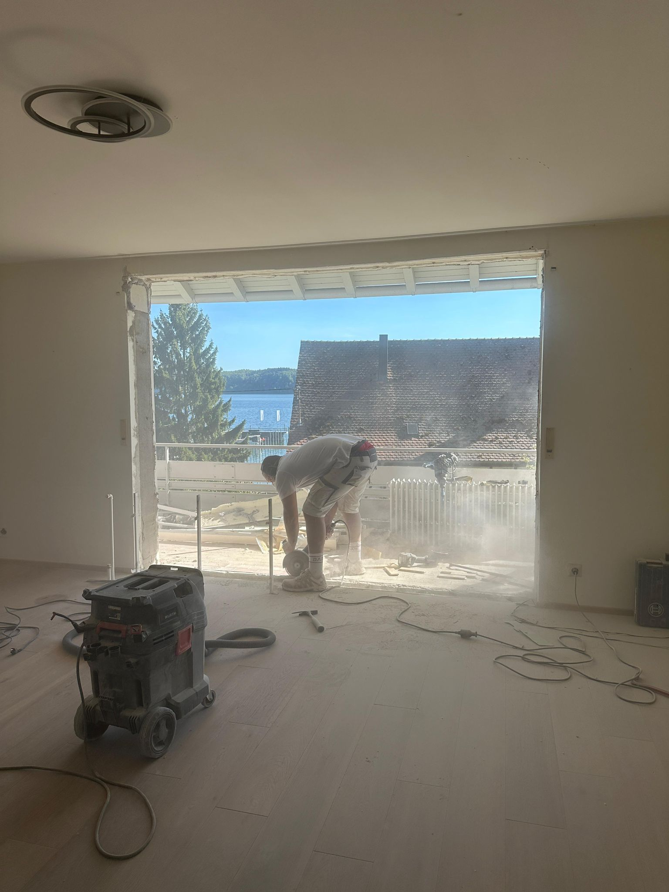

Wir führen Innenabbrüche, Entkernungen und Wanddurchbrüche in Stockach und der Bodenseeregion durch – mit statischer Absicherung wo nötig, sauberem Schnitt und inklusive Bauschutt-Entsorgung.
Ob Rückbau vor einer Renovierung, Wanddurchbruch für eine neue Tür oder komplette Entkernung vor einem Umbau – wir machen die Vorarbeit, damit Ihr Projekt sauber starten kann. Als erfahrener Fachbetrieb in Stockach arbeiten wir schnell, sicher und hinterlassen eine saubere Baustelle.
Tragende Wände, Betondecken, Stahlbeton: Wir erkennen was statisch relevant ist und sichern entsprechend ab. Ihre Sicherheit und die Statik des Gebäudes stehen immer zuerst.
Durchbrüche für Türen, Durchgänge und Fenster. Tragende und nichttragende Wände, inkl. Sturz-Einbau und statischer Absicherung wo erforderlich.
Vollständige Entkernungen vor Renovierungen: Wände, Böden, Deckenverkleidungen, Estrich, Sanitär-Rückbau. Alles aus einer Hand.
Rückbau von Anbauten, Garagen, Nebengebäuden und Dachausbauten. Selektiver Rückbau oder Komplettabriss möglich.
Wir stellen Container, sortieren Bauschutt fachgerecht und organisieren die Entsorgung – Sie müssen sich um nichts kümmern.

Ein Wanddurchbruch kostet je nach Wandstärke, Material und Stützmaßnahme ca. 500–2.000 €. Wir erstellen Ihnen ein kostenloses Angebot nach Besichtigung und klären vorab ob eine statische Prüfung notwendig ist.
Das hängt davon ab, ob es eine tragende oder nichttragende Wand ist. Nichttragende Wände benötigen in der Regel keine Genehmigung. Tragende Wände erfordern eine statische Prüfung. Wir klären das mit Ihnen vor Beginn.
Eine Wohnungsentkernung (60–100 m²) dauert in der Regel 2–5 Arbeitstage. Wir nennen Ihnen nach Besichtigung einen verbindlichen Zeitplan.
Ja – Container, Abtransport und Entsorgung sind Teil unseres Leistungsumfangs. Sie müssen sich um nichts kümmern.
Kostenloses Angebot nach Besichtigung. Wir melden uns am selben Tag zurück.